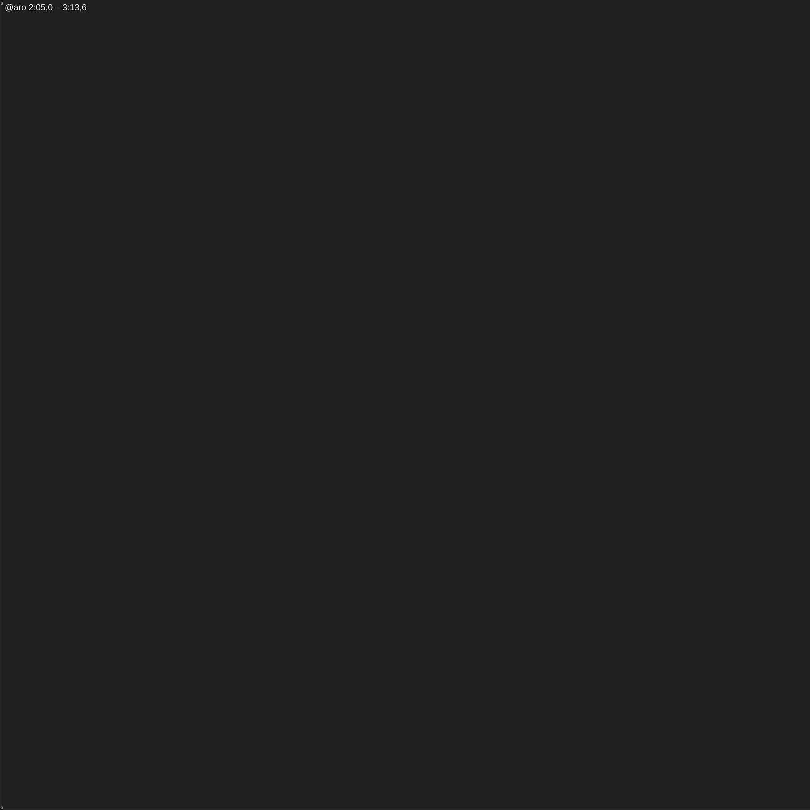

Recorridos · Cap2_02_MananaDespues
Cada personaje con su color; un punto cada 2 s (con el segundo cada 10 s); los conos son las cámaras con su número de plano.
1. @vela · 0:00,0 – 0:46,4
2. @origen · 0:46,4 – 1:32,3
3. @eldran · 1:32,3 – 2:05,0
4. @aro · 2:05,0 – 3:13,6
